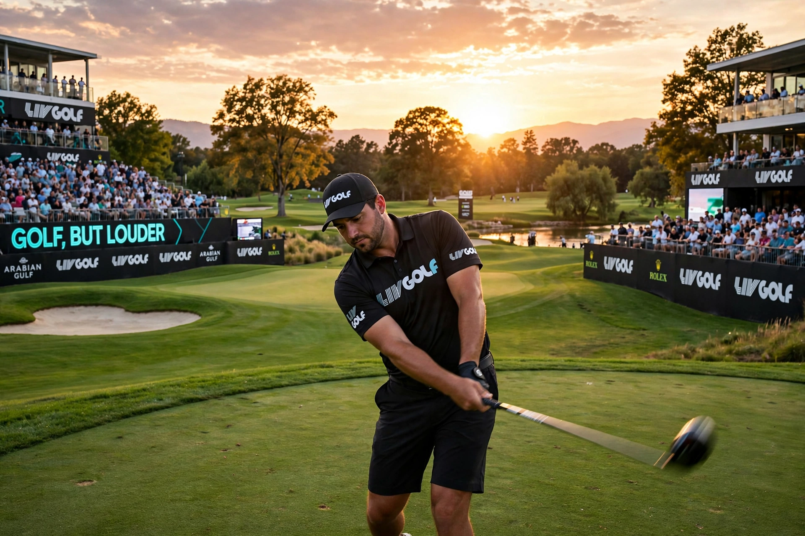

LIV Golf is a professional men's golf tour financed by Saudi Arabia's Public Investment Fund. Its name, LIV, is the Roman numeral for 54 — the score for birdieing every hole on a par-72 course and the number of holes in its early events.
LIV events feature 54 holes, shotgun starts, no cut, individual and team competitions, and guaranteed purses far exceeding PGA Tour norms. Enormous signing fees lured stars including Phil Mickelson, Dustin Johnson, Brooks Koepka, Bryson DeChambeau and Jon Rahm. The PGA Tour suspended defectors, and critics accused Saudi Arabia of "sportswashing" its human-rights record.
In June 2023 the PGA Tour, DP World Tour and PIF announced a framework agreement to combine commercial interests, stunning the golf world; negotiations continued without a completed deal. See PGA Tour.